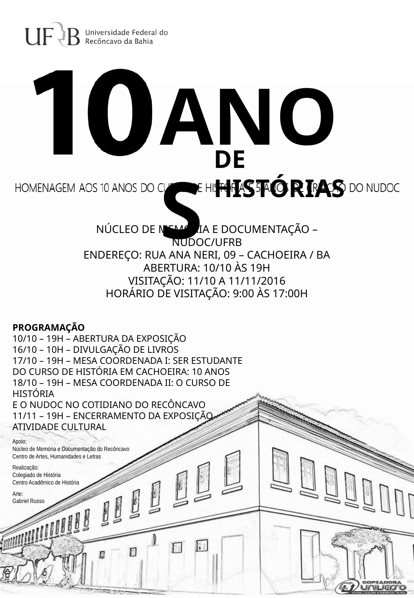
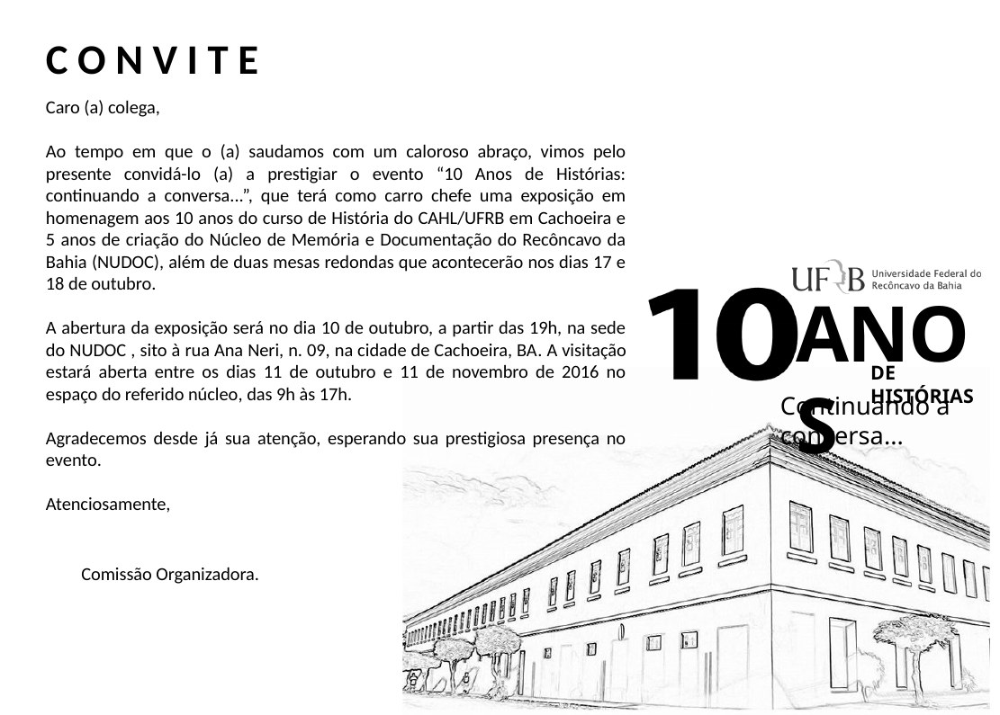
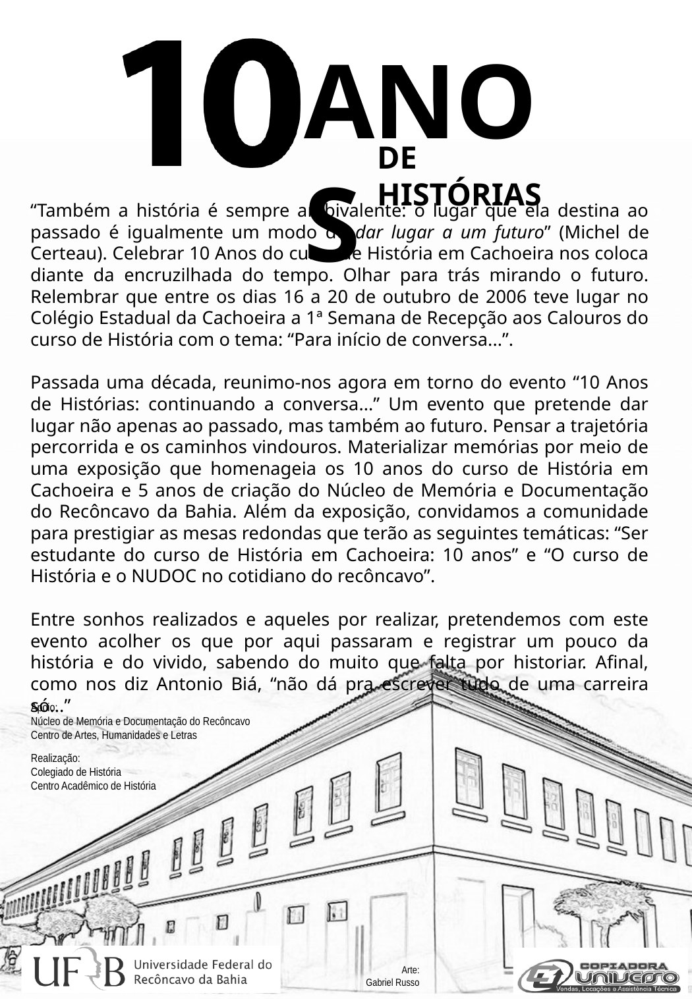
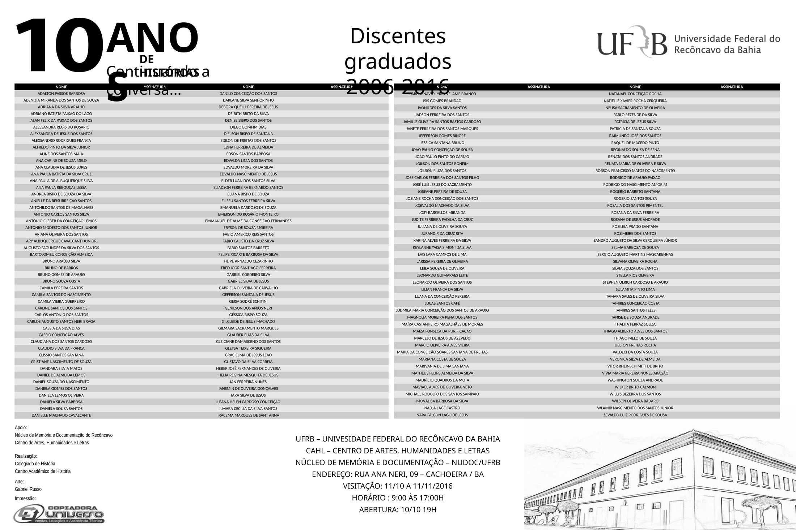
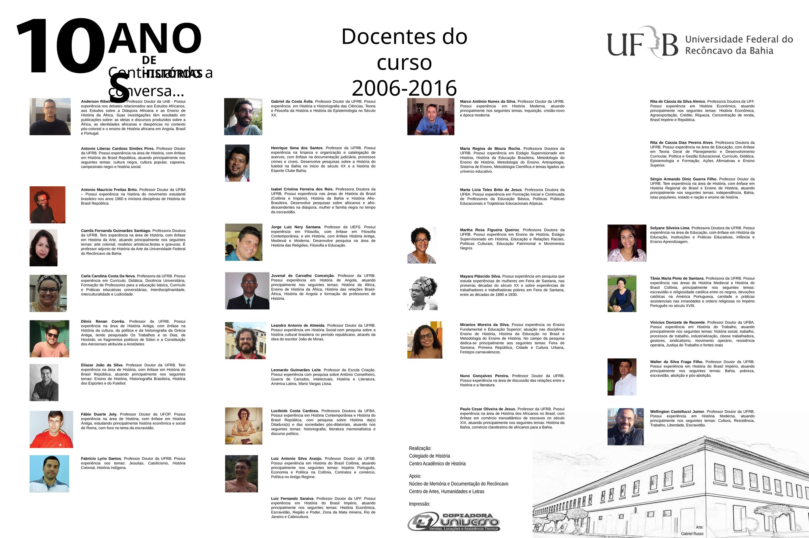

Dez anos depois
10 Anos de Histórias: continuando a conversa...
Em outubro de 2016, professores, estudantes, egressos e a comunidade acadêmica reuniram-se para celebrar a primeira década do Curso de História. A comemoração retomou deliberadamente a expressão utilizada na recepção de 2006 e transformou a própria trajetória do curso em objeto de memória.
A comemoração dos dez anos
A programação teve como eixo uma exposição no Núcleo de Memória e Documentação do Recôncavo da Bahia (NUDOC), aberta em 10 de outubro de 2016 e com visitação até 11 de novembro. O conjunto preservado inclui cartaz, convite, texto curatorial, painéis dedicados a egressos e docentes e uma montagem audiovisual de fotografias dos primeiros dez anos.
Essa formulação sintetiza a perspectiva da curadoria: comemorar o aniversário significava organizar vestígios da primeira década e, ao mesmo tempo, pensar as continuidades do curso. O próprio texto curatorial recordava a Semana de Recepção de 2006 e estabelecia a passagem de “Para início de conversa...” para “continuando a conversa...”.
Cartaz, convite e texto curatorial



Quem construiu o curso
Dois grandes painéis da exposição procuraram registrar as pessoas que haviam construído a primeira década: um reuniu os nomes dos discentes graduados até 2016; o outro apresentou docentes que passaram pelo curso e breves informações sobre suas trajetórias e áreas de atuação. São documentos produzidos pelo próprio curso para representar sua história naquele momento.


Memórias dos primeiros dez anos
Produzido para as comemorações de 2016, o vídeo reúne fotografias de estudantes, professores, atividades acadêmicas e momentos de convivência. Mais do que registrar solenidades, a montagem preserva fragmentos da experiência cotidiana construída em torno do curso.